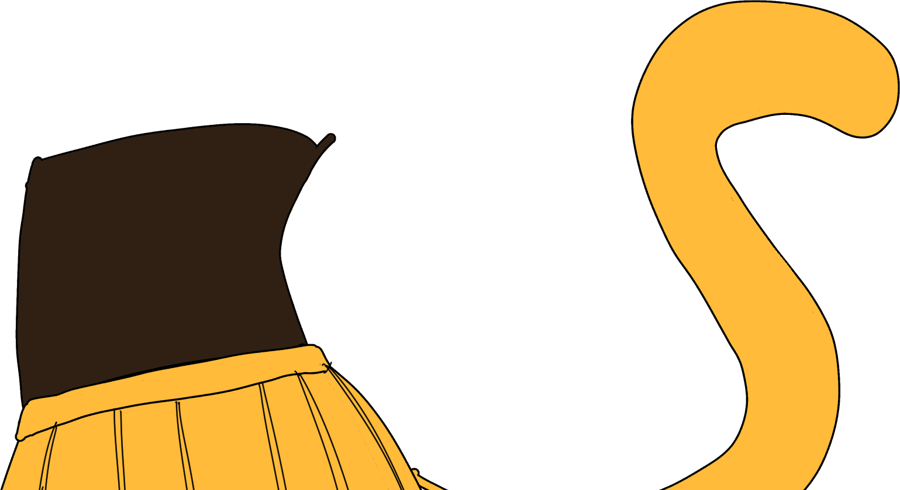
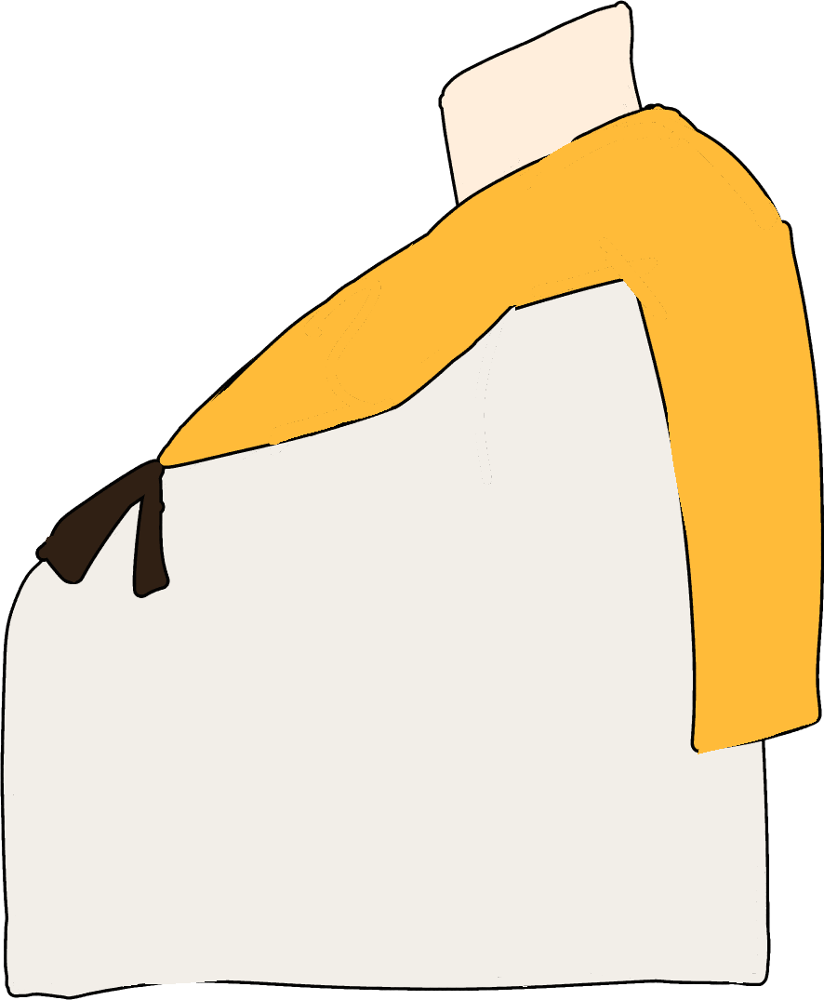
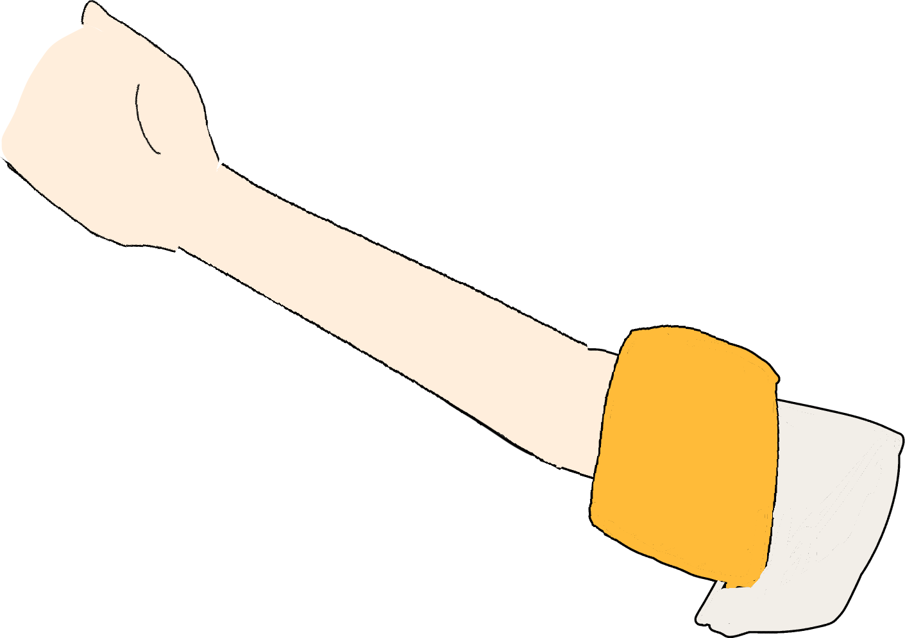
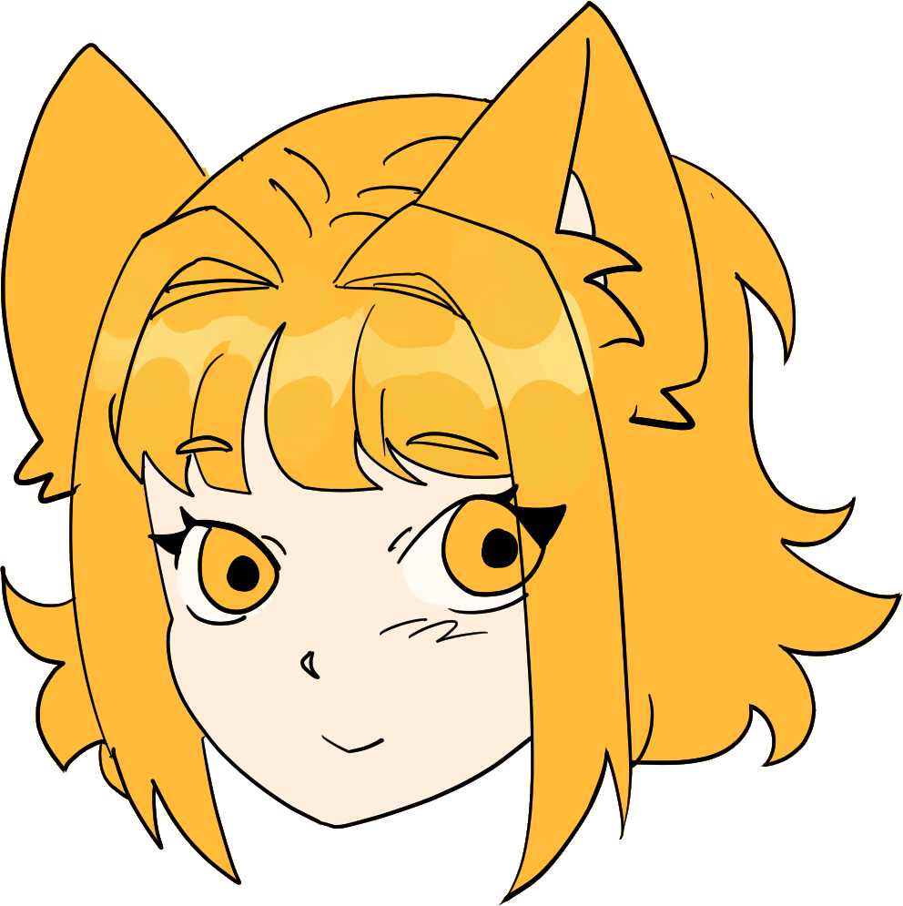
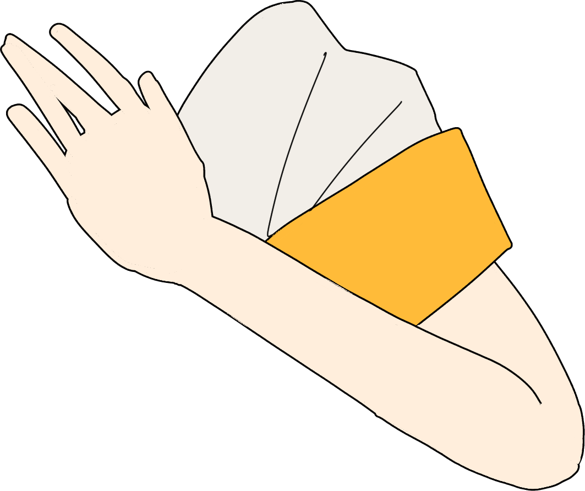
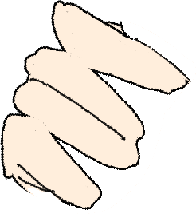

Con la tarjeta real de referencia (mismos estilos que GeekPoint) para ver si el personaje llega a sus esquinas. Mueve los controles y copia los valores de abajo para pasármelos.
Pone el origin de los dedos en el MISMO punto absoluto que usa el brazo (el hombro), para que ambas piezas giren como una sola pieza rígida sin que el puño gire sobre sí mismo. Vuelve a darle click si mueves left/top/width de cualquiera de las dos.